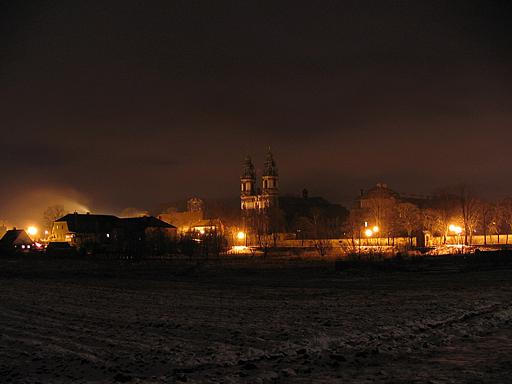
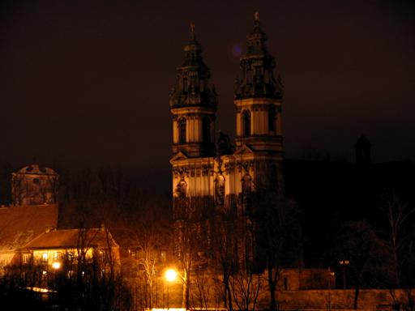
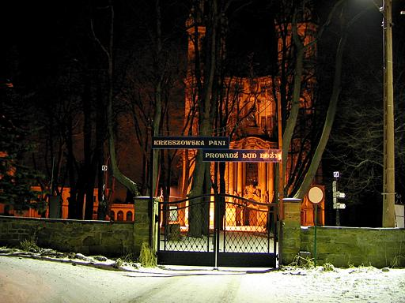
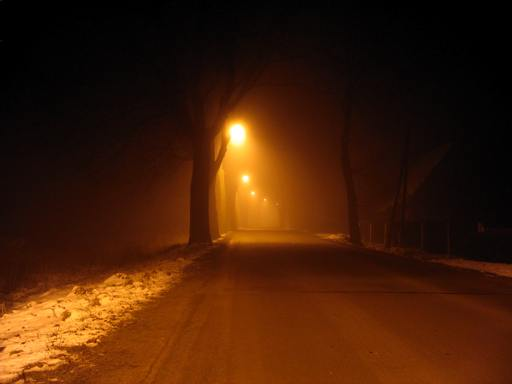

Krzeszów nocą
30 grudnia 2004 roku postanowiłem zrobić kilka zdjęć krzeszowskiej bazyliki nocą. Niestety, nie jest ona tak pięknie podświetlona jak niektóre inne kościoły, jednak mimo wszystko udało mi się zrobić zdjęcia którymi chciałbym się pochwalić.
|  | To zdjęcie zostało zrobione z pobocza drogi w kierunku Lipienicy. Czułość aparatu ustawiona na 50 ISO, czas naświetlania 15 sekund, przesłona F=2,8.
kliknij na zdjęcie z lewej strony aby powiększyć do rozmiaru 1024x768, 61 kB |
|  | Zdjęcia wykonane niemalże tak samo jak wcześniejsze, tylko przybliżone ZOOM-em.
kliknij na zdjęcie z lewej strony aby powiększyć do rozmiaru 1024x768, 67 kB |
|  | Niestety wejście na plac kościelny nie było już możliwe. O godzinie 21:40 brama wejściowa na plac kościelny była już zamknięta ...
kliknij na zdjęcie z lewej strony aby powiększyć do rozmiaru 1024x768, 127 kB |
|  | A to zdjęcie zostało wykonane przy wjeździe do Krzeszowa od strony Kamiennej Góry 16 stycznia 2005 roku o godzinie 0:30.
kliknij na zdjęcie z lewej strony aby powiększyć do rozmiaru 1024x768, 43 kB |

{kind=link}
{kind=link}
{kind=link}
{kind=link}